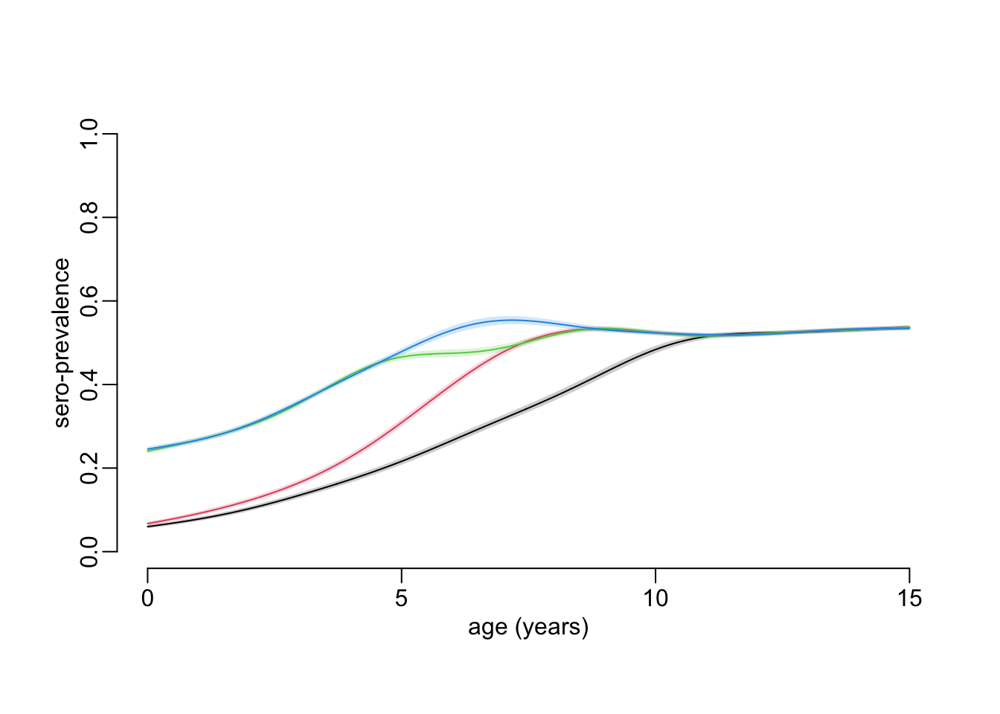

path2data <- "/Users/MarcChoisy/Library/CloudStorage/OneDrive-OxfordUniversityClinicalResearchUnit/GitHub/choisy/hfmd/"
data_file <- paste0(path2data, "hfmd_sero.rds")2023 HCMC HMFD outbreak
1 Global parameters
The path to the data file:
2 Packages
Required packages:
required_packages <- c("dplyr", "stringr", "purrr", "tidyr", "magrittr", "mgcv",
"scam", "parallel")Installing those that are not installed:
to_inst <- required_packages[! required_packages %in% installed.packages()[,"Package"]]
if (length(to_inst)) install.packages(to_inst)Loading the packages:
library(dplyr)
library(stringr)
library(purrr)
library(tidyr)
library(magrittr)
library(mgcv)
library(scam)
library(parallel)3 Utilitary functions
A tuning of the mgcv::gam() function:
gam2 <- function(..., data) {
out <- mgcv::gam(..., data = data, method = "REML")
out$data <- data
out
}A tuning of the scam::scam() function:
scam2 <- function(..., data) {
out <- scam::scam(..., data = data)
out$data <- data
out
}A tuning of the parallel::mclapply() function (I think this function works on UNIX-like systems only however…):
mclapply2 <- function(...) {
parallel::mclapply(..., mc.cores = parallel::detectCores() - 1)
}A tuning of the polygon() function:
polygon2 <- function(x, y1, y2, ...) {
polygon(c(x, rev(x)), c(y1, rev(y2)), border = NA, ...)
}A function that returns the shape parameters \(\beta\) of a beta distribution from the values of the shape parameter \(\alpha\) and the mean \(\mu\):
beta_from_alpha <- function(alpha, mu) alpha * (1 - mu) / muA function that returns the shape parameters \(\alpha\) and \(\beta\) of a beta distribution from the values of the lower and upper bounds L and U of a confidence interval and the mean \(\mu\):
beta_parameters <- function(L, U, mu, ci = .95, interval = c(.01, 1e3), ...) {
p <- (1 - ci) / 2
objective <- function(alpha) {
beta <- beta_from_alpha(alpha, mu)
q025 <- qbeta(p, alpha, beta)
q975 <- qbeta(1 - p, alpha, beta)
(q025 - L)^2 + (q975 - U)^2
}
alpha_est <- optimize(objective, interval, ...)$minimum
c(alpha = alpha_est, beta = beta_from_alpha(alpha_est, mu))
}4 Loading the data
Loading, cleaning and putting the data in shape:
hfmd <- data_file |>
readRDS() |>
as_tibble() |>
mutate(collection = id |>
str_remove(".*-") |>
as.numeric() |>
divide_by(1e4) |>
round(),
col_date2 = as.numeric(col_date),
across(pos, ~ .x > 0))5 Our method
5.1 Overview
Ideally we would like to be able to fit a binomial GAM as a function of both age and time, without any constraint on age, but imposing a monotonic increase as a function of time. Since this is not possible at the moment with the tools available, we propose a solution in 2 successive steps that we would ideally like them to be as so:
- Step 1: fitting an unconstrained binomial GAM to seropositivity as a function of age for each time point.
- Step 2: fitting a monotonically increasing beta GAM to the predictions of the unconstrained binomial GAM as a function of time for each age value.
Since there is currently no tool available that allows to fit a constrained beta GAM, we have to decompose the second step into 2 steps which consist in:
- Step 2a: converting proportions predicted by the unconstrained binomial GAM into Bernoulli realizations on which to fit a monotonically increasing binomial GAM as a function of time for each age value from which to generate predictions with confidence interval.
- Step 2b: smoothing out the stochasticity introduced by the conversion of the proportions into Bernoulli realizations by fitting unconstrained beta GAMs to the predictions and confidence interval bounds of the constrained binomial GAM as functions of age for each time point.
5.2 Algorithm
- Step 1 (age profile): for each time point (i.e. samples collection):
- fit an unconstrained binomial GAM to seropositivity as a function of age
- convert population seroprevalence into individual seropositivity realizations: for each value of a large vector of age values:
- generate the prediction + confidence interval
- from the prediction + confidence interval generate \(\alpha\) and \(\beta\) values of the corresponding beta distribution of the population seroprevalence
- from the \(\alpha\) and \(\beta\) values, generate a large number of rate values to simulate the beta distribution
- from each of the rate values, generate random realizations of a Bernoulli process to convert population seroprevalence into individual seropositivity
- Step 2a (epidemiological time): for each value of age
- fit a monotonically increasing binomial GAM to the Bernoulli realizations as a function of time
- for each time point: generate the prediction + confidence interval
- Step 2b (smoothing out the stochasticity introduced by the seroprevalence to seropositivity conversion): for each time point fit an unconstrained beta GAMs to the predictions and confidence interval bounds of step 2a as a function of age
5.3 Implementation
Age and time dimensions:
samples_collections <- 6:9
age_values <- seq(0, 15, le = 512)Generating the mean time points of each samples collection:
mean_collection_times <- hfmd |>
group_by(collection) |>
summarise(mean_col_date = mean(col_date2)) |>
pull(mean_col_date)Step 1:
pred2table <- function(x, link_inv, df, ci) {
p <- (1 - ci) / 2
x |>
as_tibble() |>
mutate(lwr = link_inv(fit + qt( p, df) * se.fit),
upr = link_inv(fit + qt(1 - p, df) * se.fit),
fit = link_inv(fit)) |>
select(- se.fit)
}
step1 <- function(col_id = 6, ci = .95, interval = c(.01, 1e3),
n_beta = 100, n_Bern = 100, ...) {
dat <- filter(hfmd, collection == col_id)
# 1. unconstrained binomial GAM:
mod <- gam(pos ~ s(age), binomial, dat)
# 2. prediction + confidence interval:
mod |>
predict(list(age = age_values), se.fit = TRUE) |>
magrittr::extract(c("fit", "se.fit")) %>%
c(list(age = age_values), .) |>
pred2table(family(mod)$linkinv, nrow(dat) - length(coef(mod)), ci) |>
# 3. convert predictions into parameters of a beta distribution:
mutate(est = pmap(list(lwr, upr, fit), beta_parameters, ci, interval, ...)) |>
unnest_wider(est) |>
# 4. generate rate values from the beta distribution:
mutate(seroprevalence = map2(alpha, beta, ~ rbeta(n_beta, .x, .y)),
# 5. generate Bernoulli realizations from each rate value:
seropositivity = map(seroprevalence, ~ map(.x, ~ rbinom(n_Bern, 1, .x))))
}Simulations step 1 (< 3”):
simulations_step_1 <- samples_collections |>
map(step1) |>
bind_rows(.id = "collection") |>
select(collection, age, seropositivity) |>
mutate(across(collection, as.integer),
collection_time = mean_collection_times[collection]) |>
unnest(seropositivity) |>
unnest(seropositivity)Step 2a:
step2a <- function(age_val, ci = .95) {
dat <- filter(simulations_step_1, age == age_val)
# 1. monotonously increasing constrained binomial GAM:
mod <- scam(seropositivity ~ s(collection_time, bs = "mpi"), binomial, dat)
# 2. prediction + confidence interval:
mod |>
predict(list(collection_time = mean_collection_times), se.fit = TRUE) |>
magrittr::extract(c("fit", "se.fit")) %>%
c(list(collection_time = mean_collection_times,
collection = samples_collections), .) |>
pred2table(family(mod)$linkinv, nrow(dat) - length(coef(mod)), ci)
}takes about 10’:
simulations_step_2a <- age_values |>
mclapply2(step2a) |>
bind_rows(.id = "age_index") |> # do we need to keep age_index?
mutate(age = age_values[as.integer(age_index)]) |>
select(- age_index)Step 2b:
step2b <- function(col_id = 6) {
simulations_step_2a |>
filter(collection == col_id) |>
mutate(across(c(fit, upr, lwr),
~ predict(gam(.x ~ s(age), betar), type = "response")))
}Smoothing step 2b:
smoothed_step_2b <- samples_collections |>
map(step2b) |>
bind_rows()Plots:
plot(NA, xlim = c(0, 15), ylim = 0:1, xlab = "age (years)", ylab = "sero-prevalence")
walk2(samples_collections, 1:4,
~ smoothed_step_2b |>
filter(collection == .x) |>
with({
polygon2(age, lwr, upr, col = adjustcolor(.y, .2))
lines(age, fit, col = .y)
}))